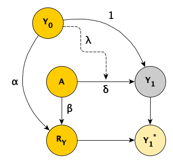

For many reasons these days, it can be challenging to conduct a randomized clinical trial. First, there is the matter of patient recruitment, which can be difficult under any circumstances, but throw in a pandemic and things get even harder. And once the patients are enrolled in the study, they need to be retained long enough so that we can measure their outcomes. This, too, can be vexing during a time when people are facing so many disruptions. Loss to follow-up recently came up during a conversation among a group of researchers who regularly get together to describe and jointly troubleshoot challenges they are experiencing their ongoing clinical trials. While everyone agreed that it is a significant issue, there was less agreement on how to handle this missing data analytically.
For me, this discussion quickly brought to mind two posts I did on missing data, where I reflected on the different missing data mechanisms (MCAR, MAR, and NMAR) and explored when it might be imperative to use multiple imputation as part of the analysis.
In light of the recent conversation, I wanted to revisit this issue of loss to follow-up in the context of a clinical trial where the outcome measure is collected at baseline (about which I’ve written about before, here and here) and we can be fairly certain that this baseline measurement will be quite well balanced at baseline.
The data generating process
In my earlier posts on missing data, I described the observed and missing data processes using a directly acyclic graph (DAG) that allows us to visualize the assumed causal relationships in our model. Here is a DAG for a clinical trial that collects baseline measure \(Y\) at baseline (\(Y_0\)) and again one year later (\(Y_1\)):

\(A\) is the treatment indicator, \(A \in \{0,1\}\), \(A=1\) if the patient has been randomized to the treatment arm, and \(A=0\) under the control arm. \(R_Y\) is a missing data indicator set to 1 if there is loss to follow up (i.e., \(Y_1\) is not collected), and 0 otherwise. \(Y_1^*\) is the observed value of \(Y_1\). If \(R_Y = 1\), the value of \(Y_1^*\) is \(NA\) (i.e. missing), otherwise \(Y_1 ^*= Y_1\).
In the scenario depicted in this DAG, both \(Y_0\) and \(A\) potentially influence the outcome \(Y_1\) and whether there is loss to follow-up \(R_Y\). (I have explicitly left out the possibility that \(Y_1\) itself can impact missingness, because this is a much more challenging problem to deal with, and is really impossible to assess. This is NMAR.) The strengths of those relationships are determined by the parameters \(\lambda\), \(\delta\), \(\alpha\), and \(\beta\). (I have fixed the direct relationship between \(Y_0\) and \(Y_1\) to a value of 1, but there is no reason that needs to be so.)
For the purposes of this simulation, I am assuming this linear relationship:
\[Y_{1i} = Y_{0i} + \delta A_i - \lambda A_i Y_{0i} + e_i, \ \ A_i \in \{0, 1\}\]
I am using \(-\lambda\) in order to simulate a situation where patients with lower values of \(Y_0\) actually have larger overall treatment effects than those with higher values. The \(Y_0\) and \(e\) are normally distributed:
\[ Y_{0i} \sim N(\mu =0, \sigma^2 = 1)\]
\[e_i \sim N(\mu =0, \sigma^2 = 0.5)\]
The missing data mechanism is also linear, but on the logistic scale. In this scenario, patients with lower baseline values \(Y_0\) are more likely to be lost to follow-up than patients with higher values (assuming, of course, \(\alpha > 0\)):
\[\text{logit}(P(R_{Yi} = 1)) =-1.5 - \alpha Y_{0i} - \beta A_i\]
Under these assumptions, the probability that a patient with baseline measure of \(0\) in the control arm is lost to follow-up is \(\frac{1}{1 + exp(1.5)} \approx 18\%\).
Data simulation
I am using the simstudy package to simulate data from these models, which allows me to define the data generating process described above. First, let’s load the necessary libraries:
library(simstudy)
library(data.table)
library(mice)
The table def implements the definitions for the data generating process. I’ve created two versions of \(Y_1\). The first is the true underlying value of \(Y_1\), and the second \(Y_{1_{obs}}\) is really \(Y_1^*\) from the DAG. At the outset, there are no missing data, so \(Y_{1_{obs}}\) is just a replicate of \(Y_1\):
def <- defData(varname = "y0", formula = 0, variance = 1)
def <- defData(def, "a", formula = "1;1", dist = "trtAssign")
def <- defData(def, "y1", "y0 + ..delta * a - ..lambda * y0 * a", 0.5)
def <- defData(def, "y1_obs", formula = "y1", dist = "nonrandom")
The missing data generating process is defined in table defM:
defM <- defMiss(
varname = "y1_obs",
formula = "-1.5 - ..alpha * y0 - ..beta * a",
logit.link = TRUE
)
For this particular simulation, I am assuming \(\delta = 1\), \(\lambda = 0.8\), \(\alpha = 1\), and \(\beta = 0\):
delta <- 1
lambda <- 0.8
alpha <- 1
beta <- 0
With all the definitions and parameters set, we are ready to generate the data:
RNGkind(kind = "L'Ecuyer-CMRG")
set.seed(1234)
dd <- genData(1200, def)
dmiss <- genMiss(dd, defM, idvars = "id")
dobs <- genObs(dd, dmiss, idvars = "id")
dobs
## id y0 a y1 y1_obs
## 1: 1 -0.068 1 0.365 NA
## 2: 2 -0.786 1 0.842 0.842
## 3: 3 0.154 0 -0.072 -0.072
## 4: 4 0.037 0 -1.593 -1.593
## 5: 5 0.926 0 1.915 1.915
## ---
## 1196: 1196 0.442 1 1.333 1.333
## 1197: 1197 2.363 1 2.385 2.385
## 1198: 1198 -1.104 0 -2.115 -2.115
## 1199: 1199 -1.380 1 0.947 0.947
## 1200: 1200 -1.023 1 1.250 NA
Estimating the treatment effect
Now, with the data in hand, we can estimate a treatment effect. In this case, I will fit three different models. The first assumes that there was no missing data at all, that we had full access to \(Y_1\) for all study participants. The second is an analysis using only cases with complete data, which ignores missing data entirely and assumes that the missing data process is MCAR (missing completely at random). The third analysis uses multiple imputation to generate values for the missing cases based on distributions of the observed data - and does this repeatedly to come up with a series of data sets (in this case 20). A model is fit for each, and the results are pooled:
fit_all <- lm(y1 ~ y0 + a, data = dobs)
fit_comp <- lm(y1_obs ~ y0 + a, data = dobs)
imp_dd <- dobs[, -c("id", "y1")]
imp <- mice(imp_dd, m=20, maxit=5, print=FALSE)
fit_imp <- pool(with(imp, lm(y1_obs ~ y0 + a)))
Here is a figure that shows the estimated regression lines for each of the models (showed sequentially in animated form). In all three cases, we are adjusting for baseline measurement \(Y_0\), which is a good thing to do even when there is good balance across treatment arms; this tends to reduce standard errors. Also note that I am ignoring the possibility of heterogeneous treatment effects with respect to different levels of \(Y_0\) (determined by \(\lambda\) in the data generation process); I am effectively estimating the average treatment effect across all levels of \(Y_0\).
The analysis based on the full data set (A) recovers the treatment effect parameter quite well, but the complete data analysis (B) underestimates the treatment effect; the imputed analysis (C) does much better.

Estimating the bias of each modeling approach
The goal now is to do a more systematic assessment of the bias associated with each model under a range of assumptions about \(\lambda\), \(\alpha\) and \(\beta\) (I am keeping \(\delta\) fixed since it has no impact on the bias). For each set of assumptions, I generated 5000 data sets with 200 patients and fit all three models to each one, recovered the point estimate of the average treatment effect \(\hat\delta_k\) for each iteration \(k, \ k\in \{1,\dots,5000\}\), and calculated the bias for each set of assumptions and model as:
\[Bias =\frac{1}{5000} \sum_{k=1}^{5000} (\hat\delta_k - \delta)\]
In total, I assessed 54 scenarios by setting \(\lambda = \{0, 0.2, \dots, 1\}\), \(\alpha = \{0, 0.5, 1\}\), and \(\beta = \{0, 1, 2\}\). The figure below, shows the estimated bias for each of the three modeling approaches. It is clear that if we have no missing data, all the estimates are unbiased. And in this case, it does not appear that missingness related specifically to treatment arm (determined by parameter \(\beta\)) does not have much of an impact. However bias is impacted considerably by both heterogeneous treatment effect (parameter \(\lambda\)) and missing related to \(Y_0\) (parameter \(\alpha\)), and especially the combination of both.

If missingness is independent of \(Y_0\) (\(\alpha = 0\)), there is no induced biased just using complete data, even with substantial heterogeneity of treatment effect (\(\lambda = 1\)). With moderate missingness due to \(Y_0\) (\(\alpha = 0.5\)), there is still no bias for the complete data analysis with low heterogeneity. However, bias is introduced here as heterogeneity becomes more pronounced. Using imputation reduces a good amount of the bias. Finally, when missing is strongly related to \(Y_0\), both the complete data and imputed data analysis fare poorly, on average. Although multiple imputation worked well in our single data set above with \(\alpha = 1\), the figure below suggest that it did not perform so well on average at that level. This is probably due to the fact that if there is a lot of missing data, imputation has much less information at its disposal and the imputed values are not so helpful.
Addendum
Here is the code used to generate the iterative simulations:
s_define <- function() {
def <- defData(varname = "y0", formula = 0, variance = 1)
def <- defData(def, "a", formula = "1;1", dist = "trtAssign")
def <- defData(def, "y1",
formula = "y0 + ..delta * a - ..lambda * y0 * a", variance = 0.5)
def <- defData(def, "y1_obs", formula = "y1", dist = "nonrandom")
defM <- defMiss(
varname = "y1_obs", formula = "-1.5 - ..alpha * y0 - ..beta * a",
logit.link = TRUE
)
return(list(def = def, defM = defM))
}
s_generate <- function(list_of_defs, argsvec) {
list2env(list_of_defs, envir = environment())
list2env(as.list(argsvec), envir = environment())
dd <- genData(200, def)
dmiss <- genMiss(dd, defM, idvars = "id")
dobs <- genObs(dd, dmiss, idvars = "id")
return(dobs) # generated_data is a data.table
}
s_model <- function(generated_data) {
imp_dd <- generated_data[, -c("id", "y1")]
imp <- mice(imp_dd, m=20, maxit=5, print=FALSE)
a_all <- coef(lm(y1 ~ y0 + a, data = generated_data))["a"]
a_missing <- coef(lm(y1_obs ~ y0 + a, data = generated_data))["a"]
fit_imp <- pool(with(imp, lm(y1_obs ~ y0 + a)))
a_imp <- summary(fit_imp)[3, "estimate"]
return(data.table(a_all, a_missing, a_imp)) # model_results is a data.table
}
s_single_rep <- function(list_of_defs, argsvec) {
generated_data <- s_generate(list_of_defs, argsvec)
model_results <- s_model(generated_data)
return(model_results)
}
s_replicate <- function(argsvec, nsim) {
list_of_defs <- s_define()
model_results <- rbindlist(
parallel::mclapply(
X = 1 : nsim,
FUN = function(x) s_single_rep(list_of_defs, argsvec),
mc.cores = 4)
)
#--- add summary statistics code ---#
summary_stats <- model_results[, .(
mean_all = mean(a_all, na.rm = TRUE),
bias_all = mean(a_all - delta, na.rm = TRUE),
var_all = var(a_all, na.rm = TRUE),
mean_missing = mean(a_missing, na.rm = TRUE),
bias_missing = mean(a_missing - delta, na.rm = TRUE),
var_missing = var(a_missing, na.rm = TRUE),
mean_imp = mean(a_imp, na.rm = TRUE),
bias_imp = mean(a_imp - delta, na.rm = TRUE),
var_imp = var(a_imp, na.rm = TRUE)
)]
summary_stats <- data.table(t(argsvec), summary_stats)
return(summary_stats) # summary_stats is a data.table
}
#---- specify varying power-related parameters ---#
scenario_list <- function(...) {
argmat <- expand.grid(...)
return(asplit(argmat, MARGIN = 1))
}
delta <- 1
lambda <- c(0, 0.2, .4, .6, .8, 1)
alpha <- c(0, 0.5, 1)
beta <- c(0, 1, 2)
scenarios <- scenario_list(delta = delta, lambda = lambda, alpha = alpha, beta = beta)
summary_stats <- rbindlist(lapply(scenarios, function(a) s_replicate(a, nsim = 5000)))